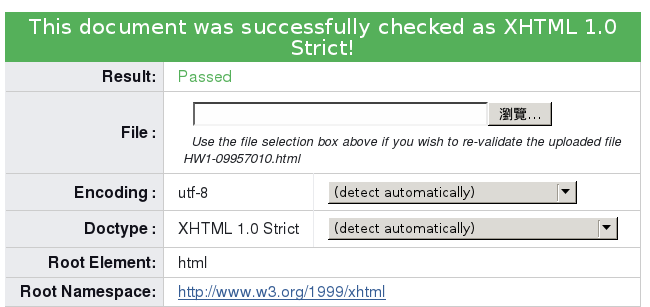

| 本校上課時間與發車時間對照表 | ||||
|---|---|---|---|---|
| 節次 | 本校上課時間 | 發車車次與時間 | 專車路線 | 票價 |
| 這是網路程式設計課的練習 | ||||
| 0 | 06:20~08:10 | 第1班次 07:00 | 忠孝復興站→海大 士林站→海大 |
50元 |
| 1 | 08:20~09:10 | |||
| 2 | 09:20~10:10 | 第2班次 09:00 | ||
| 3 | 10:20~11:10 | |||
| 4 | 11:15~12:05 | 第3班次 12:00 | ||
| 5 | 12:10~13:00 | 第1班次 12:15 | 海大→忠孝復興站 海大→士林站 |
|
| 6 | 13:10~14:00 | 第2班次 15:20 | ||
| 7 | 14:10~15:00 | |||
| 8 | 15:10~16:00 | 第3班次 17:15 | ||
| 9 | 16:05~16:55 | |||
